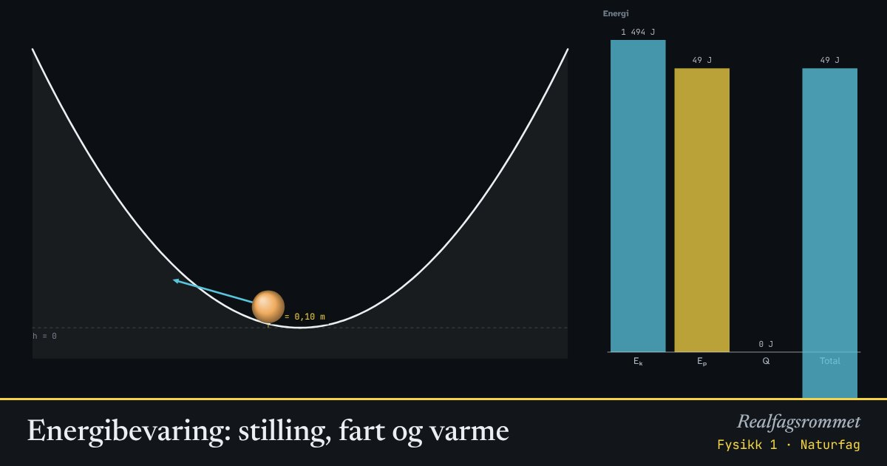

Energibevaring: stilling, fart og varme
Når kula ruller ned, blir potensiell energi til kinetisk energi. Med friksjon blir litt av energien til varme hele tiden, men den totale energien er alltid den samme.
Start animasjonen
Formler
Om animasjonen
Den gule søylen er potensiell energi, . Den blå er kinetisk energi, . Den røde er energi som har blitt til varme på grunn av friksjon.
Uten friksjon kommer kula alltid tilbake til samme høyde. Med friksjon kommer den litt kortere for hver tur.
Den hvite rammen viser den totale energien. Den endrer seg aldri. Energien bare skifter form.
Prøv dette
- Slipp kula fra 3 m høyde uten friksjon. Hvor stor er farten i bunnen? Sjekk med .
- Hvorfor endrer ikke farten i bunnen seg når du endrer massen?
- Med dobbel dal: hvor høyt må du slippe kula for at den skal komme over den midterste toppen?
- Hvor mye varme er laget når kula til slutt ligger stille?
Kompetansemål
- Naturfag: Energi og energiomforming (også i yrkesfagene)
- Fysikk 1: Krefter, bevegelse og energi
- Fysikk 1: Bevaring av bevegelsesmengde og energi
- Fysikk 1: Energiomforming, energikvalitet og virkningsgrad
Mer om energi, varme og svingninger
- Energiomforming og virkningsgrad
- Temperatur og varme: is blir til damp
- Spesifikk varmekapasitet: varmt og kaldt blandes
- Partikkelmodellen og den ideelle gassloven
- Fjær og harmonisk svingning
- Energikvalitet: varmepumpe og panelovn
- Vindkraft: hvor mye energi er det i vinden?
- Strømforsyning: vind, sol, vann og gass